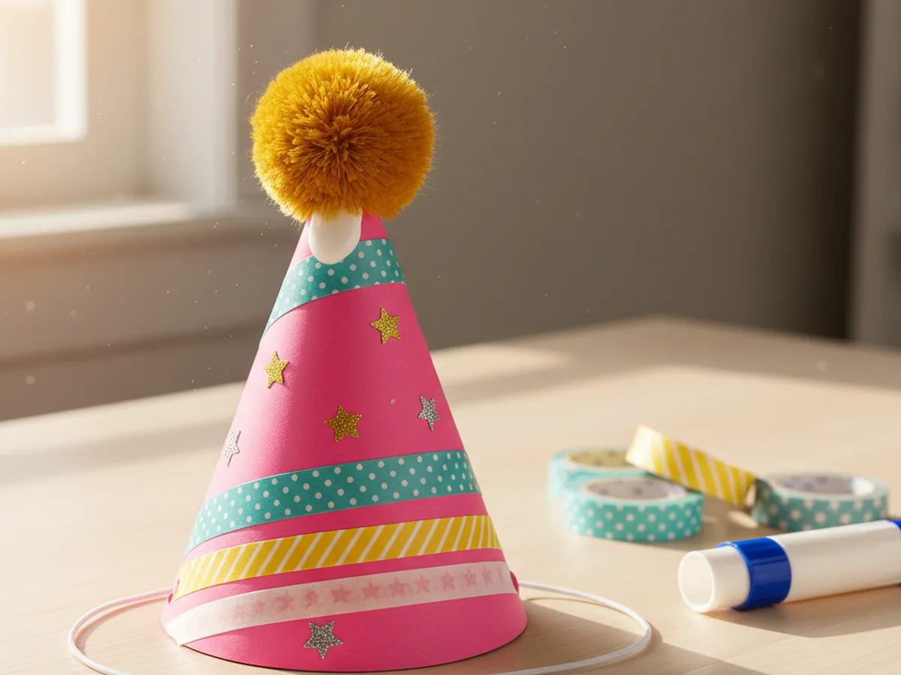
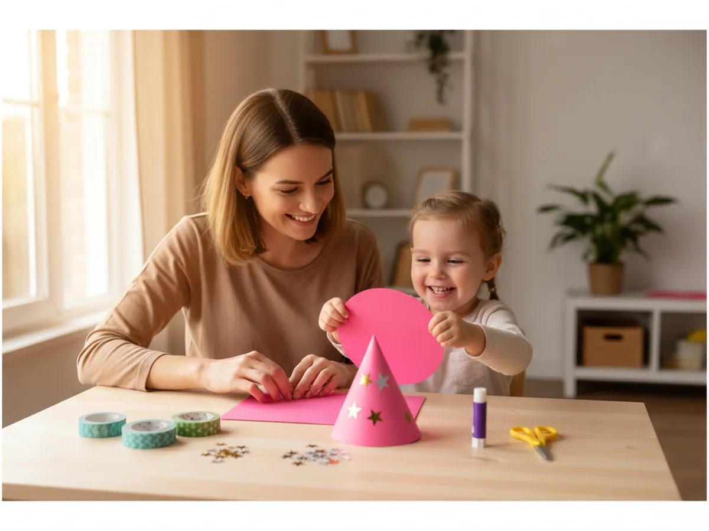
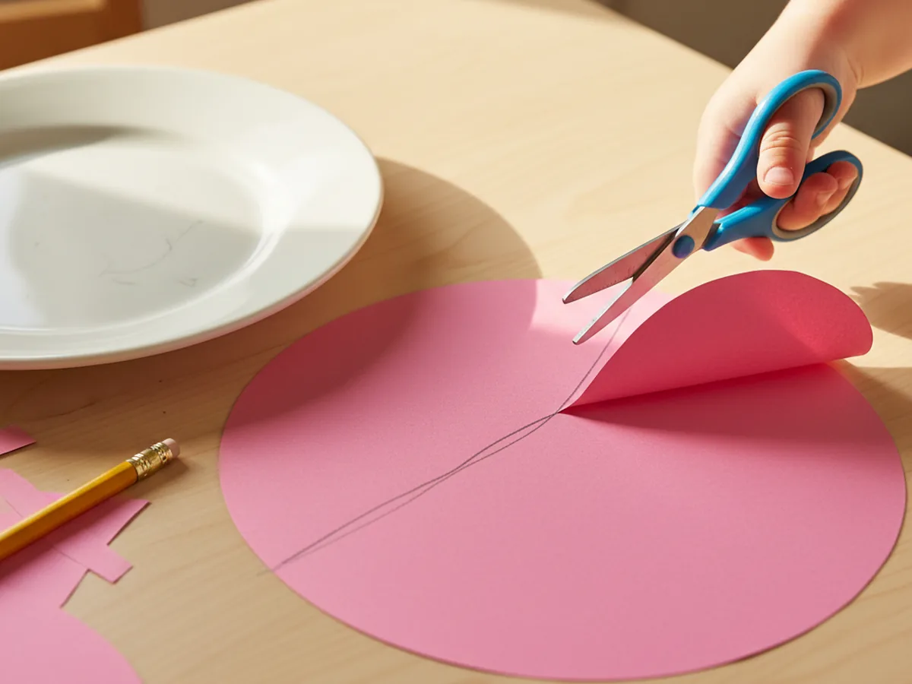
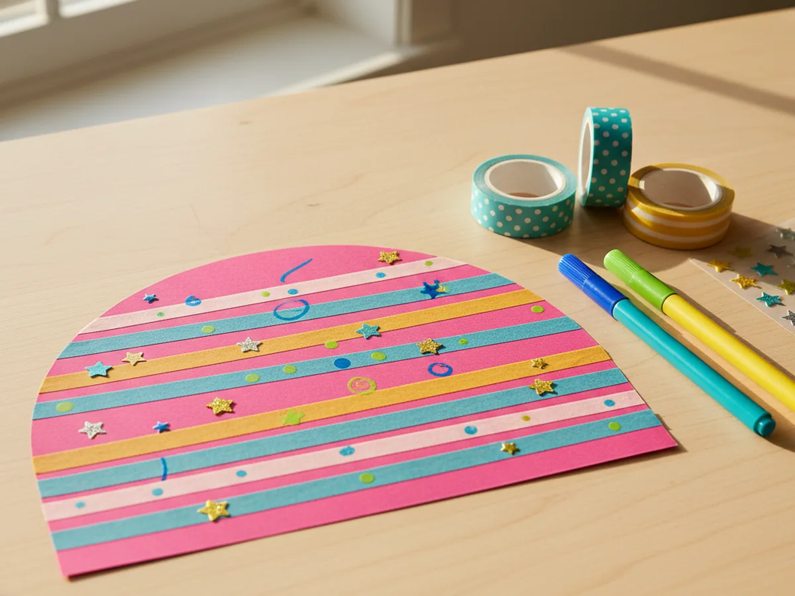
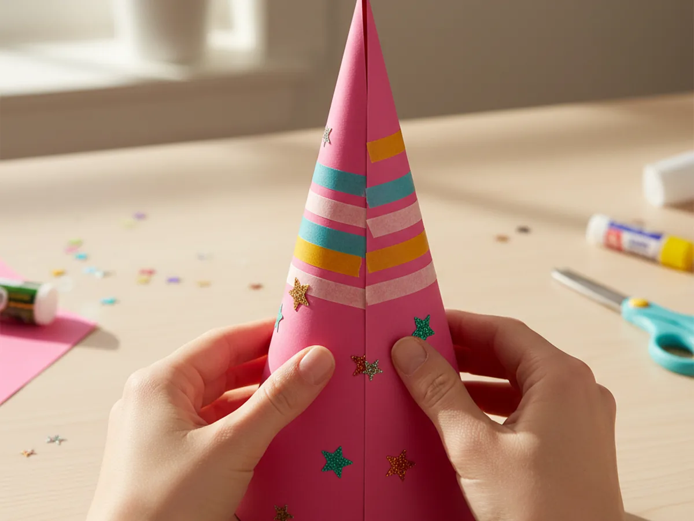
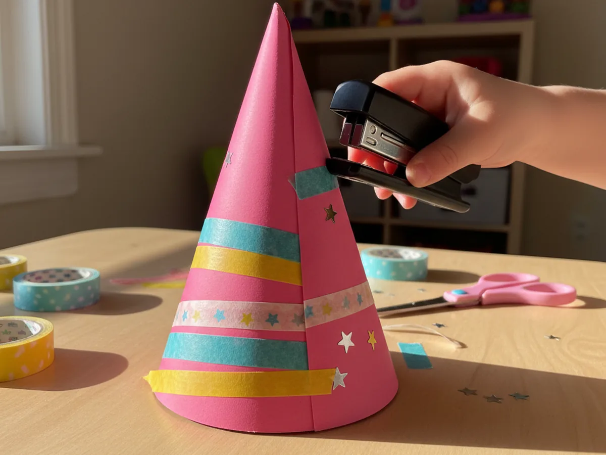
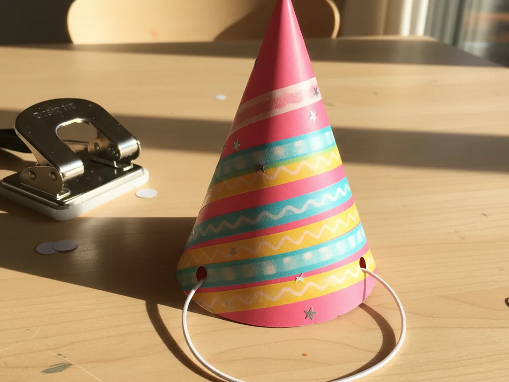
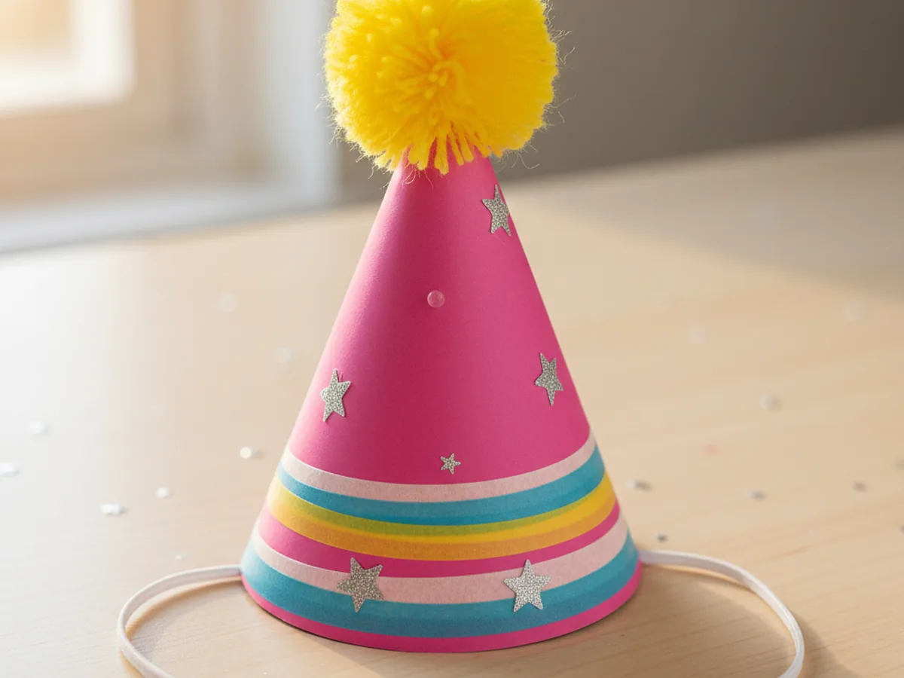
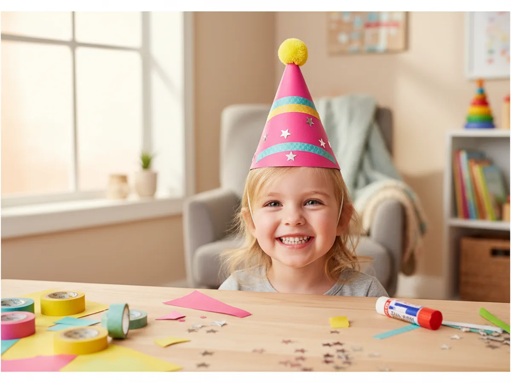

This little paper hat craft is one of those projects that takes about 30 minutes start to finish and ends with a child grinning under a real wearable party hat. You cut a half circle from bright cardstock, decorate the flat side, roll it into a tall cone, fasten the seam, add a chin strap, and finish with a fluffy pom pom on top. That is the whole craft, and the moment your child slips it on their head, you can feel the giggles starting. 🎉
It is a calm, low-mess activity for kids age 3 and up, and one of the most rewarding paper projects to do with a young child at the kitchen table. Toddlers can decorate the flat paper before rolling, while older kids can manage the rolling and stapling on their own. Either way, your paper hat craft ends up wearable, cheerful, and totally birthday-ready.
Why Kids Love This Craft
Children love hats. There is something about wearing your own creation that turns an ordinary afternoon into a small celebration. When your child realizes they are about to make a real hat they can actually put on their head, the excitement is immediate. As soon as the cone takes shape, most kids start parading around the kitchen, twirling, and announcing themselves as the queen of the party or the captain of a paper ship.
This paper hat craft for kids also gently builds real skills without ever feeling like a lesson. Cutting the half circle supports scissor practice. Decorating the flat paper with markers, washi tape, and stickers helps with focus and color choice. Rolling the cardstock into a cone is a wonderful spatial exercise that teaches little hands how a flat shape becomes a 3D object. None of it feels like work because the whole project is wrapped in the sweetness of making a hat to wear right away.
The decorating step is where every child's personality shines through. Some kids want stripes and polka dots, some draw their name across the front, some pile on stickers until you can barely see the paper. There is no wrong version of an easy paper hat craft, and that freedom is exactly what makes children proud of what they made. By the time the pom pom goes on top, the hat has a name, a story, and usually a quick fashion show across the living room.

What You'll Need
Here is everything you need to make this paper hat craft at home, and most of it is probably already in your craft drawer.
- Astrobrights Cardstock, 65 lb Bright Assortment, sturdy enough for a hat that holds its cone shape without flopping
- Crayola Construction Paper, 240 ct, perfect for adding decorative bands, stripes, or trim around the cone
- Elmer's Disappearing Purple Glue Sticks, 4 pack, easy for little hands and dries clear so no white residue shows on the hat
- Fiskars Blunt-Tip Kids Scissors, safe for ages 4 and up and just right for cutting the cardstock half circle
- Crayola Broad Line Markers, for drawing playful patterns, names, and stripes on the hat
- Agutape Washi Tape Set, 30 rolls, peel-and-stick patterns that turn a plain hat into something special in seconds
- UPINS Self-Adhesive Googly Eyes, 1000 ct, optional for an animal-themed paper hat with a friendly face on the front
- Bostitch Office Mini Stapler, the easiest way to fasten the cone seam in one quick squeeze
- Colorful Craft Feathers, 800 ct, optional for a cheerful tuft on top instead of a pom pom
- A pencil and a dinner plate, optional for sketching the half circle before cutting
- A piece of thin elastic cord or yarn, for the chin strap that keeps the hat in place
Step-by-Step Instructions
Take this one calm step at a time and your child will have a wearable hat in about half an hour. Let them help with every part, even if they just press the washi tape flat or pick the colors.
Step 1: Cut a Half Circle from Cardstock
Start by tracing a large circle on a piece of bright cardstock using a dinner plate as your guide. A circle about 12 inches across works perfectly for most child-sized heads. Once the circle is drawn, fold the paper in half right along the middle of the circle and cut along that line so you end up with a clean half circle. The flat edge will become the bottom rim of your paper hat craft, and the curved edge will form the seam at the back of the cone.

Step 2: Decorate the Flat Paper
Before rolling the half circle into a cone, decorate the flat side first while the paper is still easy to work on. This is by far the easiest stage for little hands. Hand your child markers, washi tape strips, stickers, and small paper cutouts and let them go to town. Stripes, polka dots, hearts, stars, rainbows, or even their name written across the front all look adorable on a finished cone. Press every washi tape strip down firmly so nothing peels up after rolling.

Step 3: Roll the Half Circle into a Cone
Now turn the decorated paper into a cone. Hold one straight edge of the half circle in each hand and slowly bring them together, letting the paper curl naturally into a tall pointed shape. Slide the two edges so they overlap by about one inch all the way down. Pinch the very top to make sure the point stays sharp. This is usually the most magical step for young kids, since they can finally see a flat sheet of paper turn into a real hat shape right before their eyes.

Step 4: Staple or Glue the Seam
Hold the cone firmly so the overlap stays in place, then either run a thin line of glue under the top edge of the seam or simply use a stapler at the top, middle, and bottom. A few staples down the seam are the fastest, sturdiest method, especially with cardstock. If you prefer no metal at all, glue works beautifully when held for 30 seconds while it sets. The paper hat craft should now hold its shape on its own when you set it on the table.

Step 5: Add a Chin Strap
Punch a small hole on each side of the cone, just above the bottom rim and across from each other. A regular hole punch or even the sharp tip of a pencil works fine. Cut a piece of thin elastic cord or yarn about 14 inches long and thread one end through each hole, tying a knot on the inside so the cord cannot slip out. This little strap is what keeps the hat from sliding off, and it makes the whole cute paper hat craft feel like a real party accessory.

Step 6: Add a Pom Pom or Tassel on Top
Now for the finishing touch. Add a dab of glue to the very tip of the cone and press a fluffy pom pom firmly into place. If you do not have a pom pom, a small bunch of colorful craft feathers, a paper tassel made from fringed strips, or even a cluster of curling ribbon all look wonderful. Hold it for a few seconds while the glue grabs, and let it dry for a minute before turning the hat right side up.

Step 7: Try On the Finished Paper Hat Craft
Place the finished hat on your child's head, slip the elastic cord under their chin, and adjust the fit until it sits comfortably. Take a quick photo while the smile is still huge. Most kids will want to wear the hat for the rest of the afternoon, parade around the house, or invite siblings and stuffed animals to a tea party with their new paper hat craft. ✨

Variations to Try
Newspaper Sailor Hat: Skip the cone shape and try the classic folded newspaper hat instead. Take a large rectangle of newspaper or a big sheet of construction paper, fold it in half, fold the top corners down to meet at the center, and fold up the two flaps at the bottom. The result is the iconic flat sailor hat that pops open into a wearable boat shape. It is wonderful for slightly older kids who enjoy folding.
Animal Paper Hat: Turn the cone into a friendly animal by gluing two paper ears, googly eyes, and a small triangle nose to the front. Try cat ears with whiskers, brown bear ears with a round nose, or pink bunny ears with a heart-shaped pink nose. This version is a hit with kids who love pretend play. 🐰
Birthday Crown Band: If your child does not love wearing pointy hats, swap the cone for a flat headband-style crown. Cut a long strip of cardstock about 2 inches tall and long enough to wrap around their head, decorate it with stickers and washi tape, glue or staple the ends together, and add a few paper points along the top. Same fun, different fit.
Final Thoughts
A simple paper hat craft is one of those projects that proves you do not need a special occasion to make something memorable. A sheet of cardstock, a glue stick, and 30 minutes together at the table is enough to turn a regular afternoon into a tiny celebration. The real win is the moment your little one puts the hat on, looks up at you, and says, "Look, mommy, I made this." That is the kind of small magical moment that stays with both of you. Happy crafting, mama. 💛
More Crafts You'll Love
If your family enjoyed making this paper hat, here are two more sweet wearable paper crafts to try next.